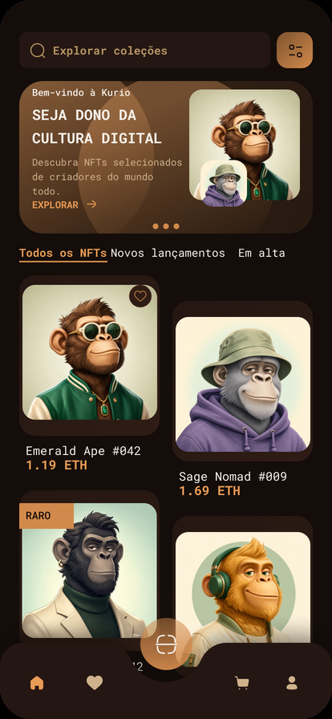
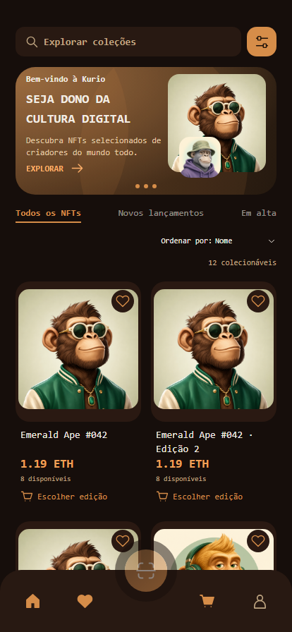
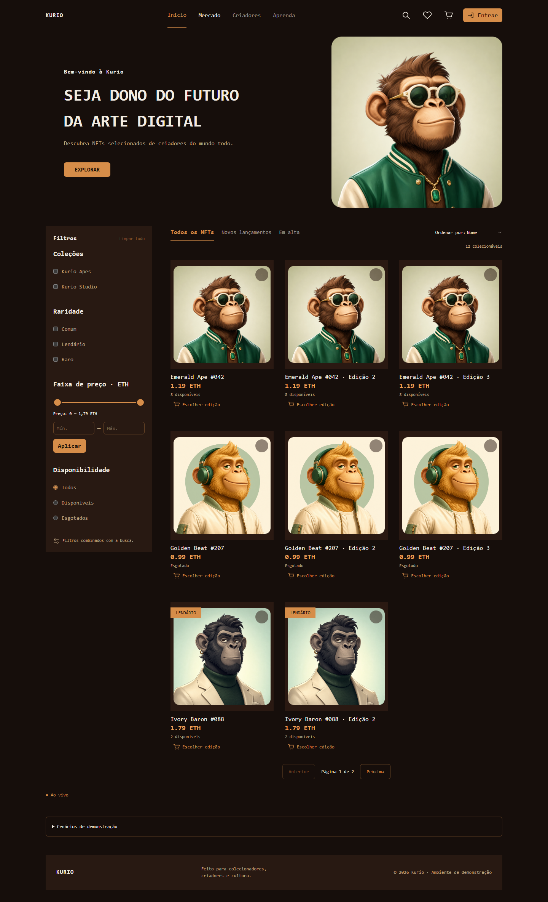
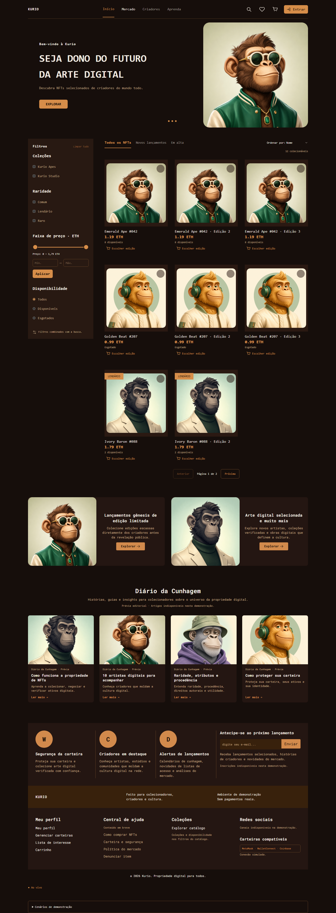

Relatório, divergências e validação. Capturas do build de demonstração, com fontes e imagens visíveis completamente carregadas.
A referência desktop é a imagem anexada à solicitação, comparada visualmente durante a revisão. O PNG não existe na pasta local e o conector recusou acesso ao arquivo. Abrir arquivo oficial do Figma. Não foi criada uma imagem substituta para representar o original.
Estrutura esperada: hero → catálogo/sidebar → dois banners → Diário da Cunhagem → informações/newsletter → rodapé. Essa sequência foi comparada às duas capturas abaixo.


O frame mobile fornecido termina na primeira dobra. O conteúdo inferior foi adaptado a partir da referência desktop. A primeira dobra da aplicação permaneceu pixel a pixel igual à captura inicial.
As páginas crescem para acomodar as novas seções. A navegação fixa aparece na posição do viewport inicial nas capturas completas.
Comparação mobile em PNG · Antes/depois desktop em PNG · Métricas antes · Métricas depois · Verificação da primeira dobra